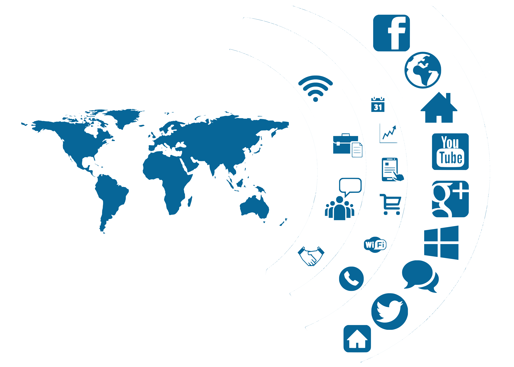

海外华文媒体社交媒体数据监测系统
Overseas Chinese Media - Social Media Data Supervising System

系统介绍
INTRODUCTION
海外华文媒体一般指中国大陆地区以外的、以中文为主要语言的信息生产与传播机构。长久以来，海外华文媒体以其跨文化、跨地域的特性，成为全球化时代信息与传播市场的重要组成部分，发挥着中外民间文化交流和情感沟通的桥梁作用。在当今世界百年未有之大变局的时代语境中，海外华文媒体的作用愈发独特而重要。
海外华文媒体社交媒体数据监测系统（Overseas Chinese Media - Social Media Data Supervising System）收录了来自全球58个国家和地区的358家海外华文媒体在脸书（Facebook）、推特（X，原Twitter）、微博、微信四个社交媒体平台上开设的共计超过1000个账号,通过数据抓取技术获取账号的粉丝量、发文量、互动量等重要指标信息，经由数据处理技术和可视化技术加工，最终以直观的形式显示媒体的布局情况、数据走势等信息，从数据角度出发，以期给海外华文媒体提供更多元的参考和支持。
本系统支持用户对数据进行多维度的筛选和分析，例如按国家、地区或平台类型进行分类，以帮助用户快速定位目标媒体的表现情况；用户也可以根据自身需求选择特定时间范围、指标了解目标媒体在不同时间范围内、不同指标的表现。为了提升用户体验，系统提供了交互式数据可视化界面，用户通过简单的点击操作即可自由调整图表参数，从不同维度洞察数据背后的深层信息。
未来，本系统将将进一步优化算法模型，引入更多数据源，为用户提供更加全面的海外华文媒体传播生态视角。本系统还计划引入自然语言处理技术，深入分析媒体发布内容的情感倾向与传播效果，进一步提升对华文媒体传播格局的洞察力。
Copyright © 2025 版权方.All rights reserved.